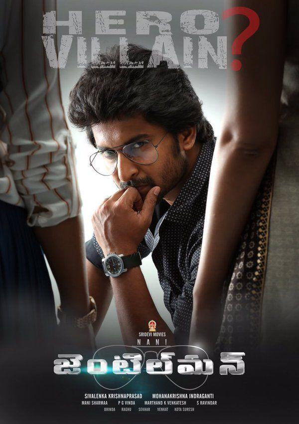
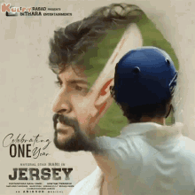
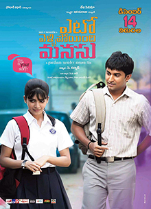
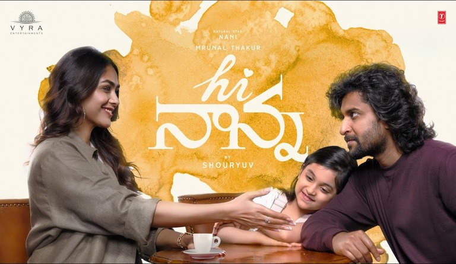
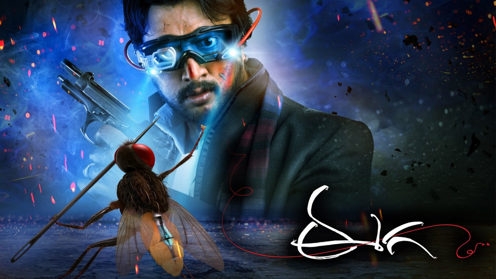

Nani Life Jounrney
Birth
Nani was born on 24 February 1984 in a Telugu family and was brought up in Hyderabad.His family hails from Challapalli, Andhra Pradesh. Nani did his schooling from St. Alphonsa's High School, Hyderabad, and then did his intermediate from Narayana Junior College, S. R. Nagar before graduating from Wesley Degree College, Secunderabad. After five years of courtship, Nani married Anjana Yelavarthy on 27 October 2012. Their son Arjun, was born in 2017.
Career Begining
As an undergraduate, Nani got addicted to movies, citing Mani Ratnam as a major influence.He wanted to become a director; however, producer Anil Kumar Koneru allowed him to work on his production, Radha Gopalam (2005), as a "clap director", alongside director Bapu. He then worked for films including Allari Bullodu (2005), Astram (2006), and Dhee (2007). Nani took a break, to work on a film script. Bhargavi Mallela, a friend of his, who was then working as a RJ for World Space Satellite, offered Nani work as an RJ .He accepted the offer and worked there for one year, hosting a program named "Non-Stop Nani".
First Film
Director Mohan Krishna Indraganti noticed Nani in an advertisement and offered him a role in the aforementioned film Ashta Chamma, also starring Swati Reddy. Ashta Chamma was well received by critics and Nani's performance was praised by them. He has good emotions and dances well, though his body language sometimes reminds of Subhalekha Sudhakar - May this be treated as a compliment to the ease that the veteran actor shows on the screen! His addiction is good too.
Second Film
His second film, Ride, was produced by Bellamkonda Suresh, with Tanish, Swetha Basu Prasad and Aksha Pardasany playing important roles. Ride was also a notable success at the box office. He next starred in Satyam Bellamkonda's film Snehituda... opposite Maadhavi Latha. Snehituda... opened to negative reviews and the film was a flop at the box office. In 2010, he played the main role in the film Bheemili Kabaddi Jattu, a remake of Vennila Kabadi Kuzhu, with Saranya Mohan reprising her role as the heroine. The film opened to positive reviews with Nani's performance receiving appreciation. Rediff.com said Nani "perfectly fits into the role" and commended him for selecting the script, and One India commented that Nani "has given his best" and was "suited perfectly to the role". The film was a surprise hit at the box office.
Voice artist
Nani has also worked as a voice artist . In 2015, he dubbed for Dulquer Salmaan's role in the Telugu version of O Kadhal Kanmani, titled OK Bangaram. In 2018, he voiced for a fish in his production, Awe. In the 2019 film Jersey, Nani dubbed for Harish Kalyan. In the Telugu version of The Lion King, released in 2019, Nani dubbed for Simba.
Success Story - Speech
Whenever I've tasted success, I always remind myself there's going to be a day I'll get failures again. I am practical like that; I did not land here overnight. All I can do is continue to work hard and give my best. It's important to enjoy your work and I love cinema. I am lucky to wake up every day to do what I love.
Nani speaks at length about the idea of success, and how he takes it as a personal responsibility. He elaborates, “I want to know every detail behind my films success, whether everyone made money or not. If not, then it's not a success for me. I am the one who is interacting with every department, so I know what's happening with all of them. If the whole town is calling my film a superhit but two territories lost money, it keeps bothering me.” Nani also recalls instances when he went back to some distributors, who had earlier lost money on his films, to give them a chance to recover their costs. “Success is not an information people give you. At the end of the day, in your head, you should know if you are successful or not. That satisfaction lasts longer,” the actor reflects, as he signs off.
|  |  |  |

|
 |  |